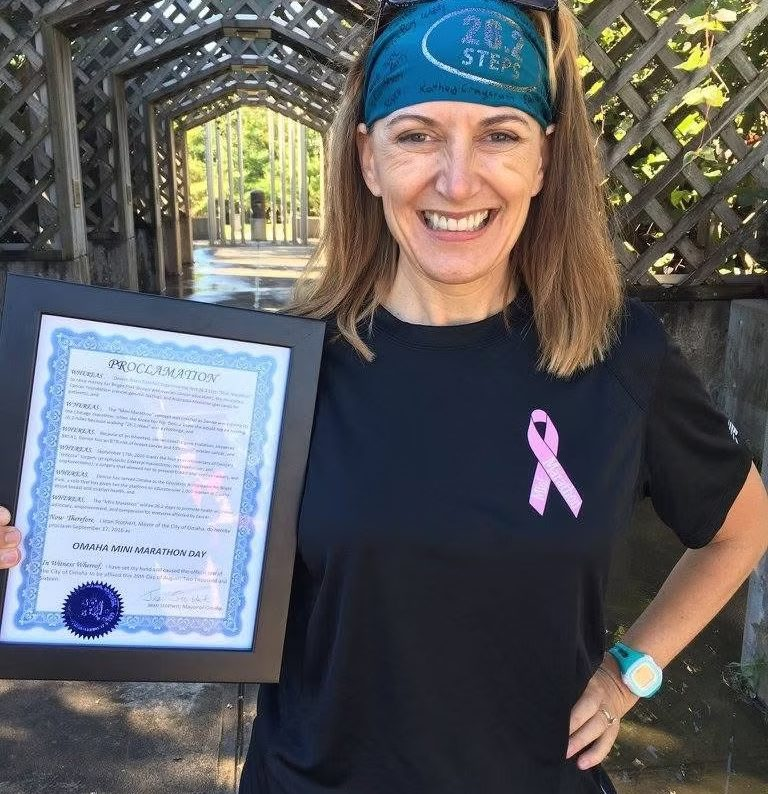

Everyone deserves to cross a finish line.
How one klutzy marathon runner with the BRCA1 mutation turned a family history of cancer into a movement — 26.2 steps at a time.

I’m Denise, and I’ll admit it: I’m a klutzy marathon runner who happens to also carry the BRCA1 mutation. Because of those two things, I’ve been able to educate thousands of people about hereditary risk, and I ran the Chicago Marathon four times for the cause. But this crazy little 26.2 “step” mini marathon? I believe it has helped more people than all of that combined. To understand why, I have to start with my mom.
The call
I still remember “the call” — the one where the voice on the other end says, “It’s cancer, but don’t worry, they say it’s treatable.” She got better, and slowly I let cancer drift to the back of my mind. About ten years later, a friend mentioned she and her mother were looking into a genetic test for cancer risk. I’d never heard of such a thing, and I couldn’t see how it applied to me. Little did I know.
When cancer came back
When cancer returned, it wasn’t where we expected, and it was aggressive. We didn’t get much time. With my mom gone, I finally remembered that conversation about genetic testing — the one no doctor had ever raised with her or with me. I needed to know: was it bad luck, or bad genes?
Becoming a “previvor”
When my results came back, I was positive for the BRCA1 mutation, putting me at significantly elevated risk for breast and ovarian cancer. I know how blessed I am to have found out before I ever had cancer — because it gave me options. Working with my providers at Nebraska Medicine, I made the decision to have proactive, risk-reducing surgeries. That’s what a “previvor” is: someone who takes preventative steps after learning they carry a hereditary mutation.
The 26.2 steps
In 2016, I was training for the Chicago Marathon when I broke my hip. That’s when the idea hit me: bring a marathon home, but instead of 26.2 miles, make it 26.2 steps. A friend once told me she couldn’t run a marathon for someone she loved — but this she could do, in their honor. Everyone deserves the experience of crossing a finish line.
Where we’re going
When I speak to people about risk, I tell them the same thing: today is the best your family health history is ever going to be. A lot of us assume our doctor will bring up genetic testing if it matters. Mine never did. Turning the Mini Marathon into a formal nonprofit is how we make sure the next family hears about it in time — so no one else has to say goodbye to someone they love simply because of bad genes.
This is a draft of Denise’s story assembled from her own words. A few details are being finalized before launch.